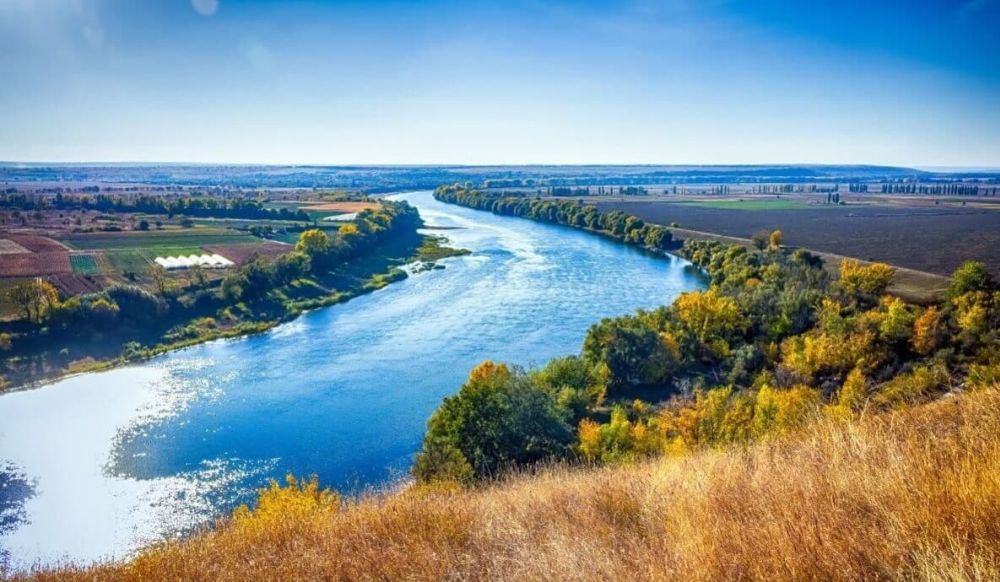

Descoperă Râul Nistru - Cursul de apă important din Moldova
Râul Nistru este un element vital al peisajului moldovenesc, oferind o varietate de experiențe și peisaje naturale:
-

Peisaje naturale - Frumusețe sălbatică
Râul Nistru străbate regiuni cu peisaje variate, de la canioane până la văi pitorești.
-

Recreere activă - Oportunități diverse
Nistru oferă posibilități pentru pescuit, navigație și alte activități recreative.
-

Faună și floră - Biodiversitate naturală
Zona înconjurătoare a râului adăpostește o varietate de specii de plante și animale.
-

Patrimoniu cultural - Ape cu poveste
Nistru are o importanță istorică și culturală, cu orașe și așezări vechi pe malurile sale.
-

Comunități riverane - Viață pe malurile Nistrului
Oamenii trăiesc și lucrează de-a lungul râului, contribuind la viața zonelor rurale.
Concluzii
Râul Nistru este mult mai mult decât un curs de apă - este o parte esențială a istoriei, culturii și naturii din Republica Moldova.